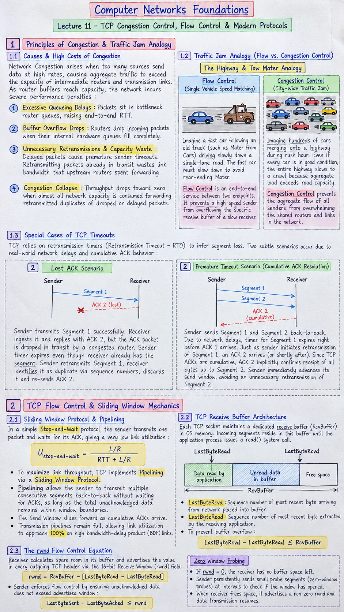

Short Notes & Visual Summary
Handwritten / quick summary notes for Lecture 11:

Click image to open high-resolution version in new tab
Principles of Congestion & Traffic Jam Analogy
1.1 Causes & High Costs of Congestion
Network Congestion arises when too many sources send data at high rates, causing aggregate traffic to exceed the capacity of intermediate routers and transmission links. As router buffers reach capacity, the network incurs severe performance penalties:
- Excessive Queueing Delays: Packets sit in bottleneck router queues, drastically raising end-to-end Round Trip Time (RTT).
- Buffer Overflow Drops: Routers drop incoming packets when their internal hardware queues fill completely.
- Unnecessary Retransmissions & Capacity Waste: Delayed packets cause premature sender timeouts. Retransmitting packets already in transit wastes link bandwidth that upstream routers spent resources forwarding.
- Congestion Collapse: Throughput drops toward zero when almost all network capacity is consumed forwarding retransmitted duplicates of dropped or delayed packets.
1.2 Traffic Jam Analogy (Flow vs. Congestion Control)
To distinguish between the two core transmission limits in transport protocols, consider the analogy of highway traffic and vehicle movement:
- Flow Control (Single Vehicle Speed Matching): Imagine a fast car following an old truck (such as Mater from Cars) driving slowly down a single-lane road. The fast car must slow down specifically to avoid rear-ending Mater. Similarly, Flow Control is an end-to-end service between two communicating endpoints: it prevents a high-speed sender from overflowing the specific receive buffer of a slow receiver.
- Congestion Control (City-Wide Traffic Jam): Imagine hundreds of cars attempting to merge onto a highway during rush hour at the exact same moment. Even if every individual car is in top mechanical condition, the entire highway grid slows to a crawl or grinds to a halt because aggregate load exceeds road capacity. Similarly, Congestion Control prevents the aggregate flow of all senders from overwhelming the shared routers and links in the core network.
1.3 Special Cases of TCP Timeouts
TCP relies on retransmission timers (Retransmission Timeout — RTO) to infer segment loss. Two subtle scenarios frequently occur due to real-world network delays and cumulative ACK behavior:
- Lost ACK Scenario:
A sender transmits Segment 1 successfully, and the receiver ingests it and replies with ACK 2. However, the ACK packet is dropped in transit by a congested intermediate router. The sender timer expires even though the receiver already holds the segment. The sender retransmits Segment 1, which the receiver identifies as a duplicate via sequence numbers, discards from its application buffer, and re-sends ACK 2. - Premature Timeout Scenario (Cumulative ACK Resolution):
A sender dispatches Segment 1 and Segment 2 back-to-back. Intermediate network delays cause the sender's timeout timer for Segment 1 to expire right before ACK 1 arrives. Just as the sender initiates retransmission of Segment 1, an ACK 2 arrives (or arrives shortly after). Because TCP ACKs are cumulative, ACK 2 implicitly confirms that the receiver has successfully received all bytes up to Segment 2. The sender immediately advances its send window, avoiding an unnecessary retransmission of Segment 2.
TCP Flow Control & Sliding Window Mechanics
2.1 Sliding Window Protocol & Pipelining
In a simple Stop-and-Wait protocol, the sender transmits one packet and waits for its ACK before sending the next, yielding an extremely low link utilization factor:
$$U_{\text{stop-and-wait}} = \frac{L / R}{RTT + L / R}$$To maximize link throughput, TCP implements Pipelining via a Sliding Window Protocol. Pipelining allows the sender to transmit multiple consecutive segments back-to-back without waiting for intervening ACKs, as long as the total unacknowledged volume remains within the window boundaries:
- The Send Window slides forward as cumulative acknowledgments arrive from the receiver.
- Transmission pipelines remain full, allowing network link utilization to approach $100\%$ on high-bandwidth-delay product (BDP) links.
2.2 TCP Receive Buffer Architecture
Each TCP socket maintains a dedicated allocated buffer in OS memory (`RcvBuffer`). Incoming segments reside in this buffer until the local application process issues a `read()` system call:
- $\text{LastByteRcvd}$: The sequence number of the most recent byte arriving from the network that was placed into the buffer.
- $\text{LastByteRead}$: The sequence number of the most recent byte extracted and processed by the receiving application.
- To prevent buffer overflow, the receiver must reserve space:
2.3 The rwnd Flow Control Equation
The receiver dynamically calculates the spare room in its receive buffer and advertises this value in every outgoing TCP header via the 16-bit Receive Window (rwnd) field:
$$rwnd = \text{RcvBuffer} - [\text{LastByteRcvd} - \text{LastByteRead}]$$The sender enforces flow control by guaranteeing that the volume of unacknowledged data sent does not exceed the advertised window:
$$\text{LastByteSent} - \text{LastByteAcked} \le rwnd$$If $rwnd = 0$, the sender pauses transmission. To prevent a deadlock where the receiver clears buffer space but the sender never hears about it, the sender sends periodic 1-byte probe segments to elicit updated ACK packets carrying non-zero $rwnd$ values.
TCP Congestion Control: 3 Phases & Slow Start
3.1 Overview of the 3 Operational Phases
TCP congestion control operates at the sender using an internal state variable called the Congestion Window (cwnd). The effective limit of unacknowledged data in flight is the minimum of flow control and congestion control:
$$\text{MaxInFlight} \le \min(cwnd, rwnd)$$TCP congestion control transitions between three distinct phases:
- Phase 1: Slow Start: Fast, exponential ramp-up of transmission rate from an initial base window to discover link bandwidth quickly.
- Phase 2: Congestion Avoidance: Conservative linear probe (+1 MSS per RTT) once window reaches a safe estimated ceiling ($ssthresh$).
- Phase 3: Congestion Detection & Recovery: Reactive throttling when packet loss indicates buffer exhaustion, resetting or halving the window depending on loss severity (Timeout vs. 3 Dup ACKs).
3.2 Slow Start Deep-Dive & Exponential Growth
When a connection begins or resumes after a major timeout, the sender does not know the available bandwidth along the path. Starting at line rate would trigger catastrophic buffer drops.
- Initial Window: Historically $cwnd = 1 \text{ MSS}$. Modern operating systems (Linux, Windows, macOS) initialize with $cwnd = 10 \text{ MSS}$ (RFC 6928) to accelerate modern web object loading.
- Growth Mechanism: For every individual ACK received, the sender increments $cwnd$ by $1 \text{ MSS}$. When all segments in a window are acknowledged, $cwnd$ effectively doubles each RTT:
Despite the name "Slow" Start, the growth rate is exponential ($2^k$ after $k$ RTTs), rapidly filling large network pipes.
3.3 The Slow Start Threshold (ssthresh) Transition
Exponential doubling cannot continue indefinitely without causing severe buffer overflow. TCP uses a state variable called ssthresh (Slow Start Threshold) to determine when to switch modes:
- While $cwnd < ssthresh$: Sender operates in Slow Start (exponential increase).
- When $cwnd \ge ssthresh$: Sender switches to Congestion Avoidance (linear additive increase).
- Setting ssthresh on Loss: Whenever loss is detected:
AIMD & Fast Recovery RTT Trace
4.1 Congestion Avoidance (Additive Increase)
In Congestion Avoidance ($cwnd \ge ssthresh$), TCP acts cautiously. Instead of doubling each RTT, $cwnd$ increases by 1 MSS per RTT regardless of how many ACKs arrive:
$$cwnd = cwnd + \frac{1 \text{ MSS}}{cwnd} \quad (\text{per ACK received})$$This linear upward slope gently probes for newly available link bandwidth without overwhelming router buffers.
4.2 Fast Retransmit & Fast Recovery (Multiplicative Decrease)
TCP distinguishes between two types of loss signals:
- Timeout (Severe Congestion): No packets are arriving; timer expires. $ssthresh = cwnd / 2$, $cwnd$ resets to $1 \text{ MSS}$, and connection restarts in Slow Start.
- 3 Duplicate ACKs (Mild Congestion): Network is still delivering subsequent packets, which trigger identical duplicate ACKs. TCP triggers Fast Retransmit (immediate retransmission without waiting for timer) followed by Fast Recovery (TCP Reno):
- Set $ssthresh = cwnd / 2$.
- Set $cwnd = ssthresh + 3 \text{ MSS}$ (accounting for 3 packets that left the network and generated the dup ACKs).
- Stay in Fast Recovery until a "fresh" new ACK arrives acknowledging the lost segment, then set $cwnd = ssthresh$ and resume linear Congestion Avoidance. Slow Start is completely bypassed.
4.3 Numerical Trace: Window Evolution Across RTTs
The table below traces a complete scenario illustrating Slow Start, Congestion Avoidance, Fast Retransmit, and recovery after timeout:
| RTT / Event | $cwnd$ (MSS) | $ssthresh$ (MSS) | State | Explanation |
|---|---|---|---|---|
| RTT 1 | 1 | 16 | Slow Start | Connection start; initial window = 1 MSS. |
| RTT 2 | 2 | 16 | Slow Start | Doubles on ACK arrival ($1 \times 2 = 2$). |
| RTT 3 | 4 | 16 | Slow Start | Exponential growth continues ($2 \times 2 = 4$). |
| RTT 4 | 8 | 16 | Slow Start | Exponential growth continues ($4 \times 2 = 8$). |
| RTT 5 | 16 | 16 | Slow Start → CA | $cwnd$ hits $ssthresh = 16$. Switches to Congestion Avoidance. |
| RTT 6 | 17 | 16 | Congestion Avoidance | Linear additive increase (+1 MSS). |
| RTT 7 | 18 | 16 | Congestion Avoidance | Linear additive increase (+1 MSS). Packet loss occurs! |
| 3 Dup ACKs | 9 | 9 | Fast Recovery | Multiplicative decrease: $ssthresh = 18 / 2 = 9$. Reno resumes at $cwnd = 9$. |
| RTT 8 | 10 | 9 | Congestion Avoidance | Fresh ACK arrives; resumes linear probe ($9 \to 10 \text{ MSS}$). |
| Timeout | 1 | 5 | Slow Start | Severe loss timeout: $ssthresh = 10 / 2 = 5$; $cwnd$ collapses to 1. |
TCP Flavors & Modern TCP CUBIC
5.1 TCP Tahoe vs. TCP Reno State Machines
The core distinction between traditional TCP implementations lies in their reaction to packet loss:
- TCP Tahoe: Treats all losses identically. Whether triggered by timer expiration or 3 duplicate ACKs, Tahoe resets $cwnd = 1 \text{ MSS}$, cuts $ssthresh = cwnd / 2$, and forces a slow start recovery.
- TCP Reno: Introduces Fast Recovery. On 3 duplicate ACKs, Reno cuts $cwnd$ in half, retransmits the missing segment, and directly resumes Congestion Avoidance, avoiding the severe performance drop to 1 MSS.
5.2 TCP CUBIC Algorithm & Window Function
Standard TCP AIMD increases $cwnd$ too slowly on modern high-speed, long-distance networks with massive Bandwidth-Delay Products (BDP) (e.g., 10 Gbps transcontinental links where recovering from a loss event via +1 MSS per RTT takes minutes).
TCP CUBIC replaces the linear additive increase function with a mathematical cubic function based on the elapsed real time $t$ since the last loss event:
$$W_{\text{cubic}}(t) = C \cdot (t - K)^3 + W_{\max}$$- $W_{\max}$: The congestion window size just prior to the most recent packet drop.
- $C$: A scaling constant determining growth velocity.
- $K$: The time period required to ramp the window back up to $W_{\max}$ in the absence of further packet loss:
Where $\beta$ is the multiplicative decrease factor (typically $0.7$ in CUBIC, retaining $70\%$ of the window on loss rather than Reno's $50\%$).
The cubic curve possesses an inflection point at $t = K$:
- Concave Phase ($t < K$): $cwnd$ grows quickly at first, then decelerates as it approaches $W_{\max}$ to gently test former stability.
- Plateau Phase ($t \approx K$): Near $W_{\max}$, growth flattens, maximizing time spent near link capacity with minimal risk of overflow.
- Convex Phase ($t > K$): If no loss occurs at $W_{\max}$, CUBIC accelerates growth upward to aggressively probe for newly added or unlocked capacity.
5.3 Linux Web Server Default & High-BDP Scaling
Because CUBIC window growth is governed by elapsed wall-clock time $t$ rather than RTT duration, it provides two transformative real-world advantages:
- RTT Independence & Fairness: In traditional TCP Reno, connections with short RTTs grow their windows much faster than flows with long RTTs. In CUBIC, flows sharing a bottleneck link with disparate RTTs achieve equitable bandwidth allocation.
- Default Linux Algorithm: TCP CUBIC is the default congestion control algorithm in standard Linux kernels (and by extension the vast majority of cloud web servers, CDN edges, and enterprise distributions worldwide).
Original PDF Notes
Below is the original PDF document for reference: